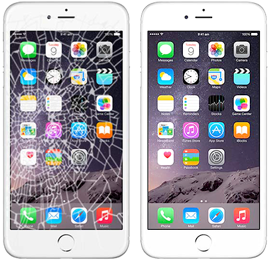
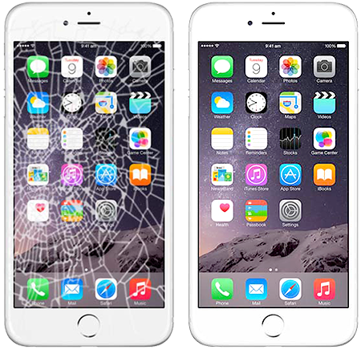
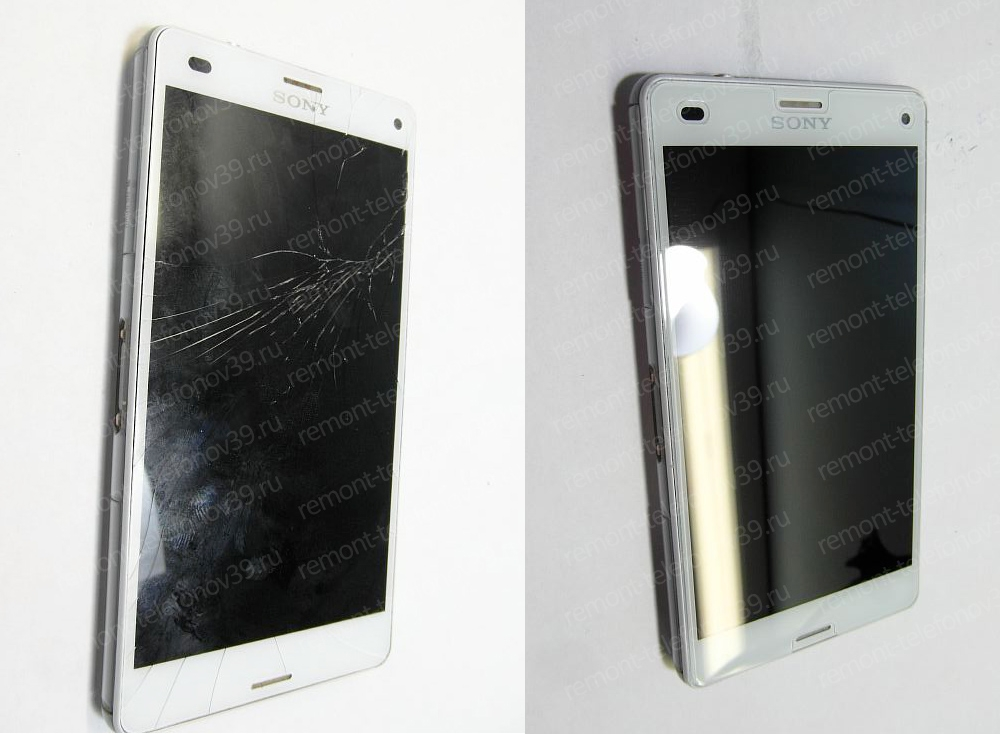
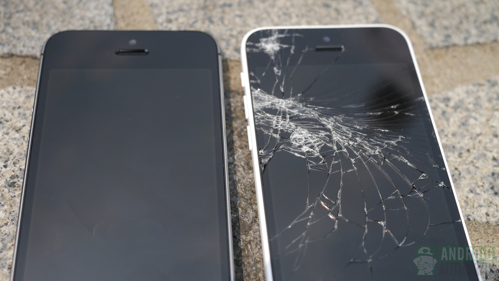
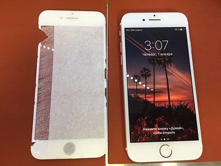
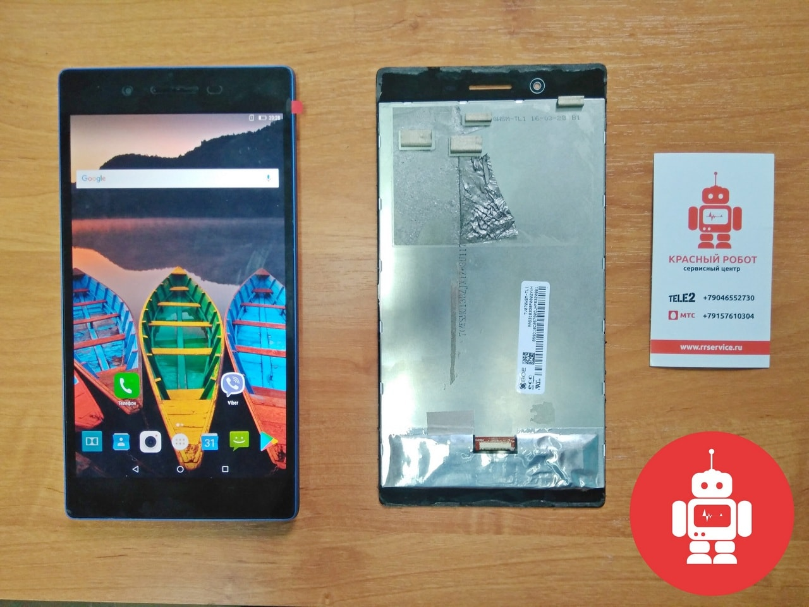
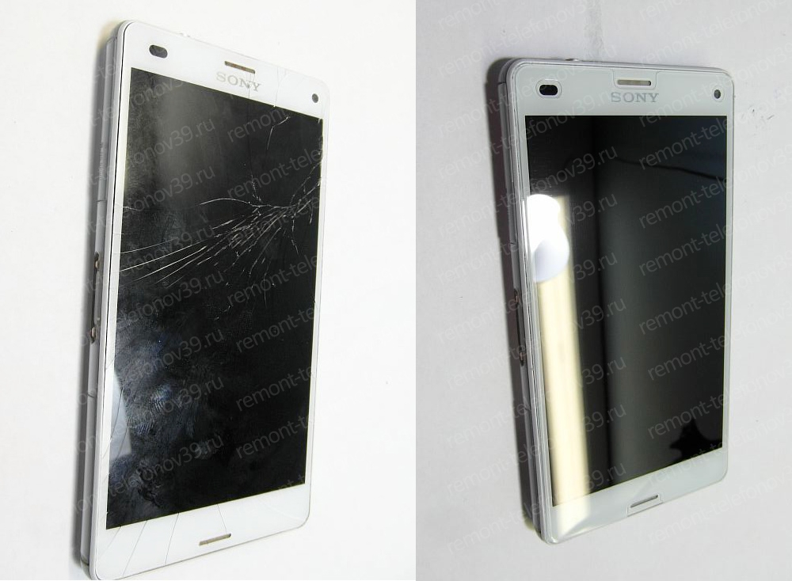
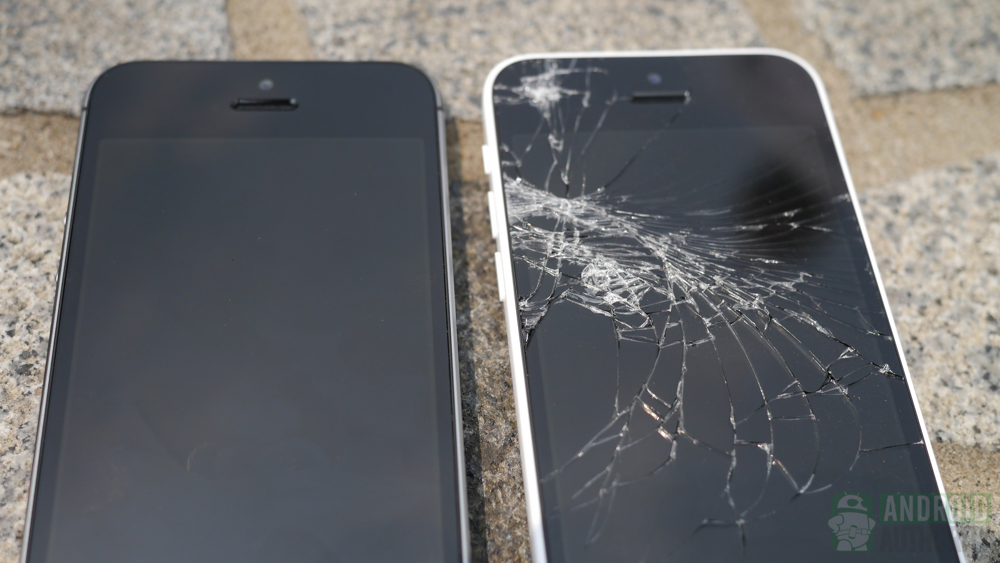
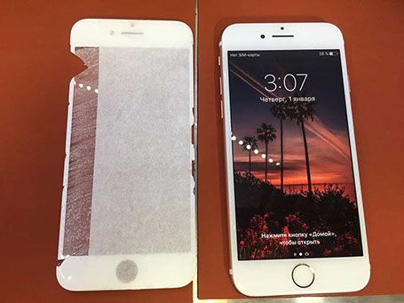
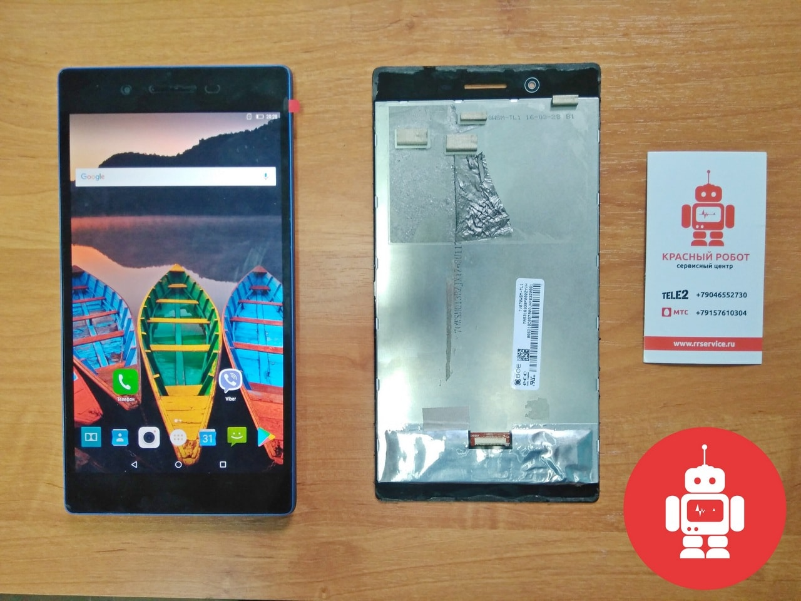

Возможные неисправности
 |
Замена дисплейного модуля Разбит дисплей, не работает сенсор, не показывает экран 1000 |
 |
Замена аккумулятора Не держит заряд, выключается на холоде или вздулся аккумулятор. А так же, если попала влага или был сильный удар. |
 |
Обновление программного обеспечения Ошибки приложений Android, не работает Google Play, не открывается галерея, Не видит сеть, нет русского языка от 300 |
 |
Чистка от коррозии после попадания жидкости Залит телефон, внутри влага, утопили от 1000 |
 

 






